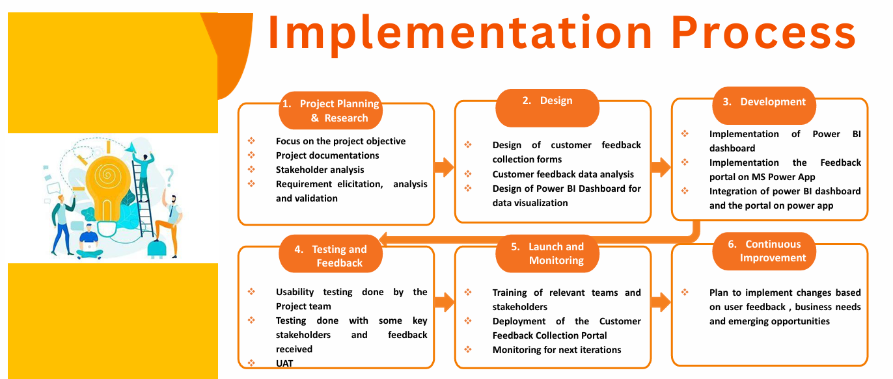

Our team developed a fully interactive dashboard using Microsoft Power BI to analyse customer feedback in real time.
We used raw feedback data and applied DAX to calculate sentiment trends, trainer ratings, and feedback volume.
Visualisations included dynamic charts, KPIs, and slicers to filter insights by course, category, or sentiment.
The dashboard was branded to 10Alytics and embedded into Power Apps for seamless access by users.
It helped stakeholders quickly spot pain points, track satisfaction levels, and respond with data backed actions.
This was one of the project most valuable outcomes turning feedback into decision ready insights.
It proved the value of Power BI in simplifying complex data for business users. Find the addtional Slide in the link below.
In our team at 10Alytics, we identified a major gap in how customer feedback was being handled it was scattered,slow, and reactive.
To address this, we developed a business case outlining the value of a centralised feedback portal.
We evaluated potential risks, estimated benefits, and demonstrated how real-time insights could improve satisfaction and loyalty.
This case helped secure buy in from decision-makers and guided the project scope.
Our team collaborated to draft, review, and present the document professionally.
It was a valuable learning experience in justifying business needs using clear, data-backed reasoning.
This step laid the foundation for our solution to have real impact. find the full link to the business case below
We started by understanding the existing feedback system the AS-IS process.
It involved disconnected tools, manual follow-ups, and no real time visibility for management.
Our team mapped each touchpoint and visualised how feedback was collected and handled.
We used Draw.io to break down user journeys and workflows.
This step revealed delays, lost data, and lack of ownership over customer concerns.
It also gave us insight into how different teams interacted with
Mapping the AS-IS process helped us highlight exactly what needed to change.
After analysing the gaps, we designed a new TO-BE process that centred around automation and accountability.
Our vision included real-time dashboards, auto routing of issues, and centralised feedback records.
Using our understanding of Microsoft Power Platform, we reimagined how feedback could flow end-to-end.
The TO-BE model showed faster response times, clearer team responsibilities, and data informed decisions.
We presented this new workflow visually, comparing it side-by-side with the old process.
This comparison helped stakeholders quickly grasp the benefits of change.
It was a major step in aligning everyone behind our proposed solution.
We used Agile principles to break the project into manageable pieces using user stories.
Each story followed the format: As a [user], I want [feature] so that [benefit]…
This helped us prioritise features that truly served real users like Chuks, the Customer Experience Executive.
User stories guided the design of feedback forms, routing logic, and dashboard KPIs.
They also helped us during sprint planning and sprint reviews with our team leads.
Writing these stories taught us how to think from the user's perspective, not just technical.
It made our work more focused, relevant, and valuable.
We tracked progress using percentage metrics during each sprint to stay on track.
Each sprint had a set of tasks with story points and completion goals.
In the final sprint, we achieved 100% completion of all 77 story points planned.
This showed strong collaboration, accountability, and focus across the team.
It also helped us identify bottlenecks early and reallocate effort when needed.
We visualised this progress using burn down charts and sprint review slides.
The metrics kept us aligned, transparent, and continuously improving.
The portal consolidates feedback from surveys, emails, and social media into a single hub, simplifying data management and improving customer insight visibility. Real-time analytics provide instant trend tracking and actionable insights, enabling quicker, data-led decisions.
Automated responses and workflows ensure timely, personalised customer engagement, enhancing satisfaction and loyalty. It promotes cross-team collaboration, helping departments like Customer Experience
and IT implement agile improvements efficiently. Designed for scalability, the platform adapts to growing business needs while maintaining performance and relevance.

The implementation process began with detailed planning, including stakeholder analysis and requirement gathering to align with business goals. Next, customer feedback forms and a Power BI dashboard were designed for clear data visualisation and analysis.
The development phase built and integrated these tools using Microsoft Power Apps, creating a seamless feedback system. Rigorous testing with stakeholders ensured usability before launch, followed by training and performance monitoring post deployment.
Continuous improvement plans were embedded to refine the solution based on user feedback and evolving needs.
Working remotely across time zones, our team faced several challenges.
Communication gaps made it difficult to align early, especially during stakeholder interviews.
Some team members had limited experience with the tools, so we supported each other through hands on learning.
Executive engagement was minimal, requiring us to take initiative and be proactive.
Despite these obstacles, we applied Agile methods and held regular check-ins.
We also created a safe space for honest feedback and learning from mistakes.
These challenges strengthened our teamwork, resilience, and leadership skills.
While our solution worked well, we also thought ahead about scalability.
We proposed adding multilingual support to serve a broader user base.
AI-driven sentiment analysis and chatbots were suggested to boost automation.
We also explored mobile app versions and voice feedback features.
Personalised dashboards for different departments could improve decision-making.
Our ideas focused on continuous improvement and adaptability to business growth.
This forward-thinking mindset was encouraged throughout the experience.